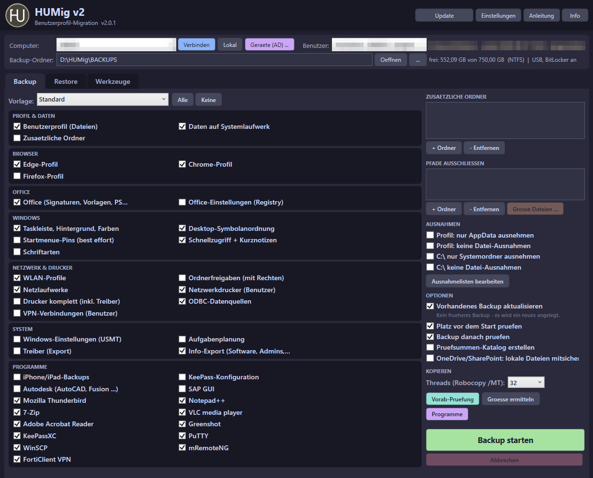
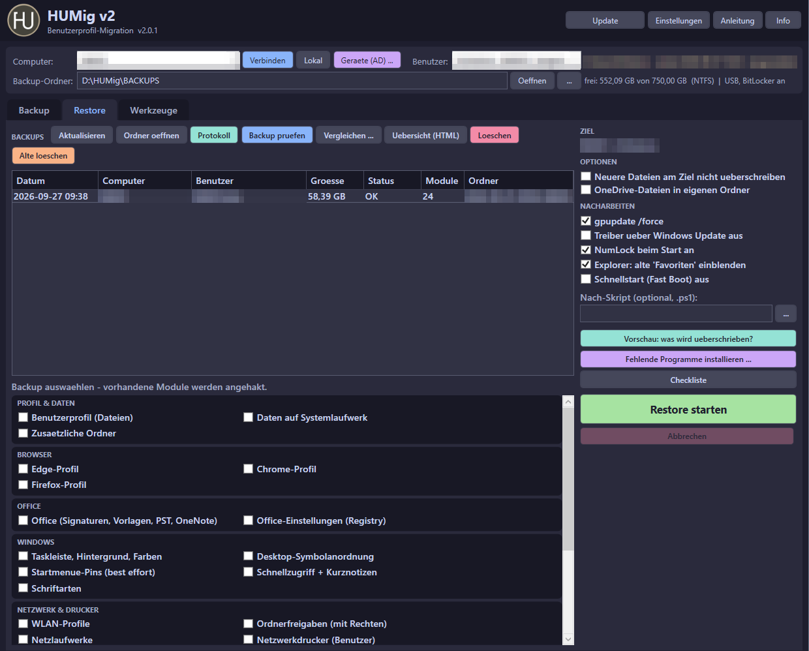
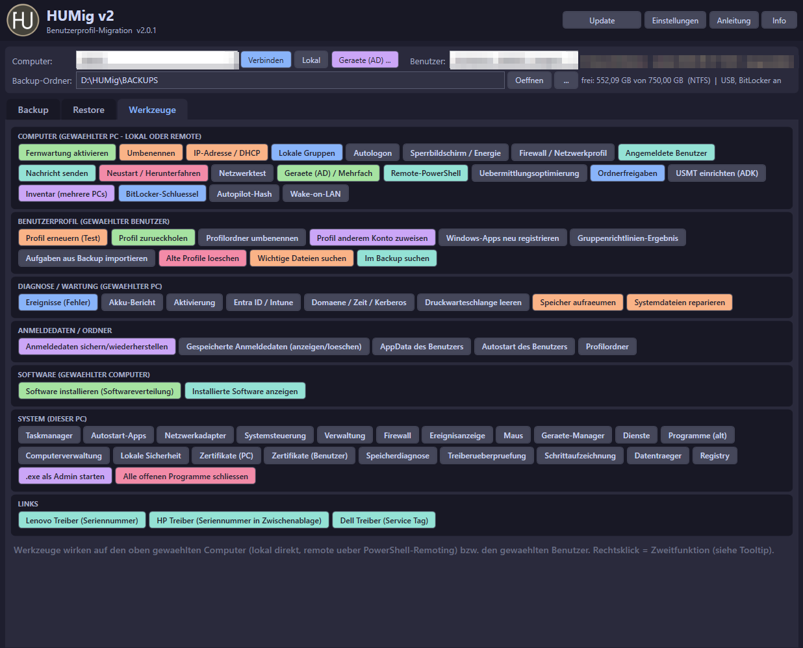

![]()
Willkommen bei HUMig v2
HUMig sichert Benutzerprofile unter Windows 10/11 und stellt sie auf demselben oder einem neuen PC wieder her – lokal auf ein USB-Laufwerk oder über das Netzwerk von jedem PC aus. Dazu kommen viele Werkzeuge für die tägliche PC-Betreuung.
Docs\Anleitung.html.1Schnellstart
Erster Start
- Tool-Ordner auf ein USB-Laufwerk (am besten NVMe) oder lokal kopieren.
- Start.cmd ausführen – fragt nach Administratorrechten. Dabei entsteht HUMig.exe: ab dann damit starten (kein Konsolenfenster, anheftbar).
- Oben den Backup-Ordner prüfen (Standard:
BACKUPS\neben dem Tool) und bei Bedarf einen Standort anlegen (siehe Standorte).
Profil umziehen (alter PC → neuer PC)
- Alter PC: Computer wählen (Lokal oder Name eintippen + Verbinden), Benutzer wählen.
- Reiter Backup: Vorlage wählen (z. B. Standard), optional Programme – erkannte Programme werden als Module ergänzt.
- Vorab-Pruefung – zeigt Anmeldestatus, Cloud-Ordner, Größe und freien Platz. Dann Backup starten.
- Neuer PC: Computer + Benutzer wählen, Reiter Restore, Backup markieren, optional Vorschau: was wird ueberschrieben?
- Restore starten, danach Fehlende Programme installieren … und Checkliste.
2Die Oberfläche
| Bereich | Bedeutung |
|---|---|
| Update | Links: neue Version laden und prüfen (Tool startet neu, eigene Daten bleiben). Wird gelb, wenn im gewählten Kanal eine neuere Version da ist. Rechts: andere Version / Vorversion, Update-Einstellungen, GitHub-Token. |
| Einstellungen | Links: Einstellungsfenster. Rechts: Konfigurationsdateien im Editor, Config-/Log-Ordner. |
| Anleitung / Info | Diese Anleitung (F1) bzw. Version und Quelle. |
| Standort | Auswahl des Standort-Profils (Backup-Ordner, Software-/Treiberverteilung, USMT, Domäne). Nur sichtbar, wenn Standorte angelegt sind. |
| Computer | Dieser PC oder Name/IP eines anderen PCs. Enter oder Verbinden lädt die Profile. Rechtsklick auf Verbinden: andere Anmeldedaten. Lokal = zurück auf diesen PC. |
| Geraete (AD) … | PCs aus dem Active Directory – einen per Doppelklick wählen oder mehrere für Mehrfachaktionen anhaken. |
| Benutzer | Profil am gewählten PC (nur echte Benutzerkonten, keine Dienstkonten). [angemeldet] = hat eine Desktop-Sitzung, [aktiv] = nur Registry geladen (z. B. getrennte Sitzung). Vorausgewählt ist am eigenen PC der Benutzer, der HUMig startet. Für einen neuen PC ohne Profil: Konto als DOMÄNE\Benutzer eintragen (dann das USMT-Modul mitwählen). |
| Backup-Ordner | … links: Ordner wählen (USB, Freigabe), rechts: Standard. Oeffnen im Explorer, Verschluesseln … = BitLocker To Go für das USB-Laufwerk. |
| Konsole (unten) | Alle Meldungen farbig. Rechtsklick = leeren, Strg+C = kopieren. Die Trennlinie ist verschiebbar. |
Ein pulsierender grüner Punkt (Statusleiste unten, im Reiter Server-Backup neben dem Ladehinweis) zeigt, dass HUMig im Hintergrund noch liest oder arbeitet – die Oberfläche bleibt dabei bedienbar. Alle Tabellen passen die Spaltenbreite dem Inhalt an (bei Bedarf waagrechter Bildlauf); Dauern werden lesbar angezeigt (z. B. 6 h 12 min).
Größe anpassen (kleine Bildschirme)
Strg++ / Strg+− oder Strg+Mausrad vergrößert/verkleinert die gesamte Oberfläche, Strg+0 = automatisch. Fest einstellen: Einstellungen › Allgemein › Skalierung. Die Größe wird beim Beenden gespeichert und gilt für alle Fenster.
Ohne Administratorrechte bietet HUMig den Benutzer-Modus an – für Profile anderer Benutzer, Remote, USMT und die meisten Werkzeuge werden Adminrechte gebraucht.
3Backup

So funktioniert es
| Was | Wie |
|---|---|
| Dateien | Robocopy mit bis zu 128 Threads und Ausnahmelisten |
| Benutzer-Einstellungen | Registry-Export aus dem Benutzer-Hive – wird geladen, wenn der Benutzer nicht angemeldet ist; Pfade und SID werden beim Restore auf den Zielbenutzer umgeschrieben |
| Windows-Einstellungen | optional Microsoft USMT (ScanState/LoadState) – legt beim Restore auch das Profil an |
| Backup-Ordner | je PC + Benutzer ein Ordner mit Datum; Protokolle, manifest.json und Berichte liegen darin |
Module
Links anhaken, was gesichert werden soll (Alle / Keine). Nach Groesse ermitteln steht neben jedem Modul die Größe.
| Gruppe | Module |
|---|---|
| Profil & Daten | Benutzerprofil (Dateien) · Daten auf Systemlaufwerk (C:\ außerhalb von Windows/Programmen) · Zusätzliche Ordner |
| Browser | Edge-, Chrome-, Firefox-Profil (Lesezeichen, Erweiterungen, Einstellungen) |
| Office | Signaturen, Vorlagen, PST, OneNote · Office-Einstellungen (Registry) |
| Windows | Taskleiste, Hintergrund, Farben · Desktop-Symbolanordnung · Startmenü-Pins (best effort) · Schnellzugriff + Kurznotizen · Schriftarten |
| Netzwerk & Drucker | WLAN-Profile · Ordnerfreigaben (mit Rechten) · Netzlaufwerke · Netzwerkdrucker · Drucker komplett (inkl. Treiber) · ODBC · VPN-Verbindungen |
| System | Windows-Einstellungen (USMT) · Aufgabenplanung · Treiber (Export) · Info-Export (Software, Admins, IP …) |
| Programme | iPhone/iPad-Backups, KeePass, Autodesk, SAP GUI u. a. – dazu alle Programme, die der Programm-Katalog erkennt |
Vorlagen haken nur Module vor – danach frei änderbar. Erkannte Programme kommen immer dazu.
| Vorlage | Enthält | Wofür |
|---|---|---|
| Standard | Profil, Daten auf C:\, Edge, Chrome, Office, Taskleiste, Desktop-Symbole, Schnellzugriff, Netzlaufwerke, Drucker, ODBC, Info | normaler Arbeitsplatz |
| Komplett | alle Module | sicher alles |
| Nur Browser + Office | Edge, Chrome, Firefox, Office, Info | schnelle Kleinigkeiten |
| Neuer PC (mit Windows-Einstellungen) | wie Standard + WLAN, Schriftarten, USMT | Benutzer war am Ziel-PC noch nie angemeldet – USMT legt das Profil an |
| Notebook | wie Standard + Firefox, WLAN – ohne Daten auf C:\ und ODBC | Notebooks |
| Büro-PC (mit Druckertreibern) | wie Standard + Office-Registry, Drucker mit Treibern, Schriftarten | Arbeitsplatz mit lokalen Druckern/Spezialschriften |
| Minimal | Profil, Edge, Chrome, WLAN, Info | schnell, nur das Nötigste |
Eigene Vorlagen: Config\modules.json bzw. Einstellungen › Module.
Zusätzliche Ordner und Ausnahmen
- Zusätzliche Ordner (+ Ordner): werden im Modul Zusätzliche Ordner mit vollem Pfad gesichert. Sind Ordner eingetragen, bleibt das Modul angehakt (auch nach Keine oder einem Vorlagenwechsel) – so lassen sich auch nur diese Ordner sichern und messen. Nicht mehr sichern: Ordner aus der Liste entfernen. Wichtige Dateien suchen … findet PST, KeePass, Access, OneNote, CAD … außerhalb der gesicherten Bereiche am gewählten Computer – Treffer als Zusätzliche Ordner übernehmen (wie unter Werkzeuge).
- Ausschließen: einzelne Ordner/Dateien weglassen (Rechtsklick auf + Ordner = Pfad eintippen). Grosse Dateien … zeigt die größten Ordner/Dateien der letzten Messung – markierte direkt ausschließen.
- Schalter: Profil: nur AppData ausnehmen · Profil: keine Datei-Ausnahmen · C:\ nur Systemordner ausnehmen · C:\ keine Datei-Ausnahmen · Ausnahmelisten bearbeiten.
Optionen
| Option | Wirkung |
|---|---|
| Vorhandenes Backup aktualisieren | Gibt es schon ein Backup dieses PCs/Benutzers, wird es weitergeführt – nur Neues/Geändertes wird kopiert. Gelöschte Dateien bleiben im Backup. |
| Platz vor dem Start prüfen | Simuliert das Backup und startet nicht, wenn der Platz nicht reicht (Rückfrage). |
| Backup danach prüfen | Vergleich Quelle ↔ Backup und SHA-256-Stichprobe. |
| Prüfsummen-Katalog erstellen | Standard aus. SHA-256 jeder Datei (Pruefsummen.tsv) – damit lässt sich das Backup später jederzeit vollständig prüfen. Der erste Lauf dauert lange, weil jede Datei gelesen wird. |
| OneDrive/SharePoint: lokale Dateien mitsichern | Aus: Cloud-Ordner werden ausgelassen. Ein: nur Dateien, die am PC liegen. Nur-Cloud-Dateien werden nie heruntergeladen. |
| Threads | 1 = schonend (HDD, langsames Netz) · 32 = Standard · 128 = maximal (NVMe) |
Vorab-Prüfung und Größe
Vorab-Pruefung prüft Verbindung, Anmeldestatus, Cloud-Ordner aller Anbieter, USMT und zeigt die Backup-Größe mit freiem Platz am Ziel – ist noch nicht gemessen, startet die Messung automatisch. Groesse ermitteln misst nur (Robocopy-Simulation, kopiert nichts).
Cloud-Ordner (OneDrive, SharePoint, Dropbox …)
HUMig erkennt die Sync-Ordner aller Anbieter, die sich bei Windows registrieren. Dateien, die nur in der Cloud liegen (Platzhalter), werden nie gelesen – so wird nichts heruntergeladen und das Backup bleibt abbrechbar. Findet HUMig Nur-Cloud-Dateien in einem unbekannten Ordner, lässt es diesen aus und meldet das.
Während und nach dem Backup
Abbrechen stoppt sofort (auch hängende Kopiervorgänge). Ein abgebrochenes Backup bleibt erhalten und ist als abgebrochen markiert.
| Datei im Backup | Inhalt |
|---|---|
Bericht_Backup.html | Druckbares Protokoll mit Unterschriftsfeldern |
HUMig.log | Ablauf mit allen Meldungen |
Robocopy.log | Kopierprotokoll. Die Spalte Übersprungen/Skipped enthält absichtlich ausgelassene Dateien (versteckt/System wie pagefile.sys, Nur-Cloud, Ausschlussmuster) – das ist kein Fehler. Fehler stehen unter FAILED. |
manifest.json | Beschreibung des Backups (Module, Programme, Status) |
Pruefsummen.tsv | Prüfsummen-Katalog (wenn eingeschaltet) |
Zeitplan (automatisches Backup)
Mit Zeitplan … (unter Abbrechen) sichert HUMig das eigene Profil an diesem PC automatisch – z. B. jeden Mittag auf ein USB-Laufwerk oder ein Netzlaufwerk. Übernommen wird die aktuelle Auswahl: angehakte Module, Zusätzliche Ordner, Ausschlüsse, Ausnahmen, Optionen (Prüfen, Katalog, OneDrive, Platzprüfung), Threads und der Backup-Ordner. HUMig muss dafür nicht geöffnet sein. Rechtsklick auf den Knopf = Zeitpläne verwalten.
| Einstellung | Bedeutung |
|---|---|
| Fortlaufend | Das neueste Backup dieses PCs/Benutzers im Backup-Ordner wird aktualisiert – nur neue/geänderte Dateien, daher schnell. Es gibt einen (immer aktuellen) Stand; gelöschte Dateien bleiben im Backup. |
| Neues Backup | Jeder Lauf legt einen eigenen Stand an (kopiert alles – dauert länger, braucht mehr Platz). |
| Kombination | Zwei Zeitpläne, z. B. täglich fortlaufend + sonntags neu: der Sonntagslauf friert den Stand der Woche ein, die täglichen Läufe aktualisieren danach das neue Backup. Ergebnis: je Woche ein fester Stand plus ein aktueller. Laufen zwei Zeitpläne gleichzeitig an, wartet der zweite, bis der erste fertig ist. |
| Wann | Täglich oder wöchentlich (Tage, Uhrzeit) oder bei Anmeldung mit Verzögerung. Verpasste Läufe (PC war aus) werden nachgeholt, auch im Akkubetrieb. |
| Alte Backups automatisch löschen | Standard aus. Ein: nach einem erfolgreichen Lauf bleiben die neuesten N Backups dieses Benutzers von diesem PC im Backup-Ordner (auch von Hand erstellte), ältere werden endgültig gelöscht. Nach einem Fehler wird nichts gelöscht. |
| Meldung | Windows-Meldung nach jedem Lauf (Klick öffnet den Bericht) – oder nur bei Warnung, Fehler oder übersprungenem Lauf. |
| USB-Laufwerk auswerfen | Standard aus. Nur bei einem USB-/Wechsellaufwerk als Ziel. Nach jedem Lauf (auch nach einem Fehler) wird das Laufwerk ausgeworfen – ein Verschlüsselungstrojaner auf dem PC kommt dann nicht mehr an die Backups. Vor dem nächsten Lauf wieder anstecken, sonst wird er übersprungen und gemeldet. Klappt das Auswerfen nicht (z. B. Datei noch geöffnet), endet der Lauf mit Warnung und Grund. Offline schalten gibt es hier nicht – dafür wären Administratorrechte nötig. |
- Konto: Die geplante Aufgabe läuft im Konto des Benutzers ohne Kennwort und nur, solange er angemeldet ist. Ohne Administratorrechte (auch im Benutzer-Modus) werden nur die Module des eigenen Profils gesichert; mit Administratorrechten angelegt, läuft die Aufgabe mit höchsten Rechten und sichert alle gewählten Module.
- Nur eigenes Profil, nur dieser PC: Für andere Benutzer HUMig in deren Anmeldung starten und dort planen.
- Backup-Ziel: Ein USB-Laufwerk wird an seiner Laufwerksbezeichnung erkannt – der Laufwerksbuchstabe darf sich ändern (Laufwerk daher benennen, z. B. BACKUP-MEIER). Ein Netzlaufwerk wird als UNC-Pfad (
\\Server\Freigabe\…) gespeichert. Ist das Ziel beim Lauf nicht da, wird der Lauf übersprungen und gemeldet. - Ort von HUMig: Die Aufgabe startet HUMig aus seinem Ordner. Liegt HUMig auf einem USB-Stick, läuft das Backup nur, wenn der Stick steckt – besser HUMig lokal ablegen (z. B.
C:\Tools\HUMig). HUMig warnt beim Anlegen. - Geöffnete Programme: Outlook und Browser sperren ihre Dateien (PST, Profil-Datenbanken) – diese können im Backup fehlen. Der Lauf nennt die geöffneten Programme im Protokoll. Tipp: Zeitpunkt wählen, an dem sie meist geschlossen sind, oder bei Anmeldung.
- Beim Start kann für einen Moment ein PowerShell-Fenster aufblitzen.
| Wo | Was |
|---|---|
| Rechtsklick auf Zeitplan … | Liste mit Inhalt (Was: Module, Zusätzliche Ordner mit Pfad), Ziel, nächstem und letztem Lauf, Ergebnis und Meldung – Jetzt starten, Protokoll, Bericht, Löschen (vorhandene Backups bleiben erhalten) |
%LOCALAPPDATA%\HUMig\Zeitplaene\ | Zeitplan-Dateien (*.json) des Benutzers, Protokolle im Unterordner Logs (je Zeitplan die letzten 30) |
| Aufgabenplanung | Aufgabe HUMig Backup - <Benutzer> - <Name> im Ordner \HUMig – ohne Rechte dafür (Standardbenutzer) in der obersten Ebene |
| Backup-Ordner | wie beim Backup von Hand: Bericht_Backup.html, HUMig.log, Robocopy.log |
4Programm-Katalog und Lizenzen
Programme (Reiter Backup) erkennt installierte Programme am Quell-PC. Für bekannte Programme werden passende Module eingeblendet und angehakt; die Übersicht zeigt, was übertragbar und was nicht übertragbar ist, welche Lizenz-Hinweise gelten, ob eine Datenbank dabei ist, welches Programm vorher geschlossen wird, was nach dem Restore zu tun ist und ob der Eintrag geprüft ist (Datum). Rechtsklick = nur Übersicht.
Der Katalog kennt u. a.: Firefox, Chrome, Edge, Microsoft 365, Thunderbird, Notepad++, 7-Zip, VLC, LibreOffice, Acrobat Reader, Foxit, GIMP, Inkscape, Audacity, Paint.NET, IrfanView, Greenshot, OBS, VS Code, KeePass/KeePassXC, FileZilla, PuTTY, WinSCP, mRemoteNG, AnyDesk, TeamViewer, FortiClient VPN, Zotero, Citavi, Obsidian, Arduino, GeoGebra, SketchUp, Autodesk, SMART Notebook, ActivInspire, Untis, Packet Tracer, Zoom, Teams, WinRAR, Total Commander, Beyond Compare, Sublime Text.
rarreg.key, Total Commander wincmd.key, Beyond Compare, Sublime Text) werden mit Lizenz gesichert und sind am neuen PC gleich registriert – Modulname mit (+ Lizenz). Nicht übertragbar sind Lizenzen, die an Konto oder Hardware gebunden sind (Microsoft 365, Adobe, Autodesk …) – dafür gibt es Hinweise in der Checkliste.Programm hinzufügen (Assistent)
Der einfachste Weg, ein weiteres Programm mitzusichern – so wie früher die Programmordner von Hand ins Backup kopiert wurden, nur automatisch:
- Oben PC und Benutzer wählen (Verbinden), dann Programme › + Programm hinzufuegen … (oder im Editor).
- Programm aus der Liste der installierten Programme wählen. Ist es schon im Katalog, bietet HUMig an, den vorhandenen Eintrag zu bearbeiten.
- HUMig sucht am PC Ordner und Registry-Schlüssel mit dem Programm- oder Herstellernamen: AppData Roaming/Local/LocalLow, Dokumente, ProgramData,
HKCU\Software,HKLM\SOFTWAREund im Programmordner Unterordner für Plug-ins/Add-ins, Vorlagen und Konfiguration sowie Lizenzdateien. Jeder Vorschlag steht mit Größe da – Haken setzen oder entfernen. Caches, Logs und Temp-Ordner werden automatisch ausgelassen. - „Programm vor Backup und Restore schließen“ ist mit dem Prozessnamen vorbelegt (aus dem Programmordner bzw. laufenden Programmen).
- Speichern – ab sofort wird das Programm erkannt und mitgesichert. Erweitert (Editor) … öffnet den Eintrag stattdessen im Editor zum Verfeinern.
Katalog bearbeiten
Im Fenster Programme (oder Einstellungen › Module) öffnet Katalog bearbeiten … den Editor (für Feinheiten – neue Programme am einfachsten mit dem Assistenten, im Editor + Programm hinzufuegen …; + Leer legt einen leeren Eintrag an). Links alle Einträge mit Suche und Filter (am PC erkannt, geprüft, ungeprüft, nur Hinweis, eigene, geändert), rechts die Reiter:
| Reiter | Inhalt |
|---|---|
| Allgemein | Id (App_…), Name, Erkennung (regulärer Ausdruck auf den Programmnamen in Apps & Features) mit Testen am PC, Paket der Softwareverteilung mit Testen, optional vorhandene Module mitverwenden |
| Sichern | Einträge vom Typ Ordner, Dateien (mit Filter, ohne Unterordner) oder Registry – Rolle (Einstellungen, Plug-ins/Add-ins, Daten, Datenbank, Lizenz, Vorlagen), Ordner/Dateien auslassen, Lizenzdatei. Ordner waehlen … wandelt den Pfad in Platzhalter um (z. B. {APPDATA}\Hersteller\Programm), Pfad pruefen zeigt am oben gewählten PC für den gewählten Benutzer, ob Ordner/Schlüssel vorhanden sind und wie groß. Je Eintrag steht, ob er zum Benutzer oder zur Maschine gehört (Maschine = Restore nur mit Administratorrechten). |
| Schließen & Dienste | Programm vorher schließen (Prozessnamen ohne .exe, Laufende Prozesse am PC …) und Dienste vorher stoppen (Dienste am PC …) |
| Hinweise | Was übertragen wird, was nicht übertragbar ist, Lizenz, Versionsverhalten, Nacharbeiten für die Checkliste |
| Quelle | Geprüft am (Knopf heute), Links auf Hersteller-Doku, Notiz – fehlt das Datum, gilt der Eintrag als ungeprüft |
- Gespeichert wird nur in
Config\apps.json(vorher Sicherungapps.json.bak).apps.default.jsonbleibt unverändert – ein geänderter Standard-Eintrag wird als Kopie mit gleicher Id abgelegt, Auf Standard zuruecksetzen entfernt sie wieder. Löschen geht nur bei eigenen Einträgen. - Exportieren … / Importieren …: einzelne Einträge als JSON-Datei weitergeben (z. B. an andere Standorte).
- Nach dem Speichern lädt HUMig den Katalog neu; Haken im Reiter Backup bleiben erhalten, erkannte Programme werden neu ermittelt.
- Im Benutzer-Modus (oder ohne Schreibrecht auf
Config) ist der Editor nur zur Ansicht.
Programm schließen, Dienste, Datenbanken
- Programm schließen: Läuft ein Programm mit Eintrag unter Schließen, fragt HUMig vor Backup bzw. Restore einmal für alle: Schließen (wie der Benutzer das Fenster schließt – ungespeicherte Arbeit fragt das Programm selbst nach), Schließen, notfalls beenden (nach 20 s hart beenden – ungespeicherte Daten gehen verloren), Modul überspringen oder Trotzdem kopieren (geöffnete Dateien können fehlen oder inkonsistent sein). Die Vorab-Pruefung zeigt laufende Programme schon vorher an. Geplante Backups beenden nie ein Programm – das Modul wird übersprungen und gemeldet. Was passiert ist, steht im Bericht und im
manifest.json. - Dienste stoppen: Für Datenbanken, die ein Dienst geöffnet hält (SQL Server Express, Firebird, MySQL). Nur mit Administratorrechten; der Dienst wird nach dem Kopieren immer wieder gestartet (auch bei Fehler oder Abbruch). Im Benutzer-Modus werden Dienst-Datenbanken mit Hinweis ausgelassen.
- Datei-Datenbanken (SQLite, Access, KeePass …): Rolle Datenbank, Art Datei. Bei SQLite kopiert HUMig die Begleitdateien
-wal,-shmund-journalautomatisch mit. Liegt neben einer Access-Datenbank eine Sperrdatei (.laccdb/.ldb), ist sie geöffnet – HUMig warnt. - Dienst-Datenbanken per Dateikopie sind nur bei gleicher Datenbank-Version am Ziel verlässlich. Sicherer ist die Sicherung des Herstellers bzw. der Datenbank – die Checkliste erinnert daran.
- Gesperrte Dateien (z. B. geöffnete Datenbank) stehen mit Dateiname im Protokoll und Bericht des Moduls.
- Nicht übertragbar: gespeicherte Kennwörter, die Windows verschlüsselt (DPAPI – z. B. in Browsern, FileZilla, WinSCP, mRemoteNG), Store-Apps und Standard-Programm-Zuordnungen. Einstellungen einer älteren Programmversion passen nicht immer zu einer neueren – Hinweis unter Version.
Datenbanken suchen
Welche Datei eine Datenbank ist, muss man nicht wissen: Datenbanken suchen (Werkzeuge › Benutzerprofil) durchsucht das Profil des gewählten Benutzers (auf Wunsch alle Profile), ProgramData, die Programmordner, das Systemlaufwerk und alle weiteren Festplatten nach SQLite-, Access-, KeePass-, SQL-Server- und Firebird-Dateien und listet Datenbank-Dienste (SQL Server, Firebird, MySQL/MariaDB, PostgreSQL). Windows, Caches, Browser- und Mail-Profile (sichern eigene Module) und Backup-Ordner werden ausgelassen.
- Ergebnis je Ordner: Art, Ort (AppData, ProgramData, Programmordner, Laufwerk D: …), Anzahl, Größe, zuletzt geändert und Geöffnet – dann läuft gerade das Programm dazu.
- Ordner als "Zusaetzliche Ordner" aufnehmen – schnell, aber das Programm muss man vor dem Backup selbst schließen.
- Als Katalog-Eintrag anlegen … – öffnet den Editor vorausgefüllt (Rolle Datenbank, Pfad mit Platzhaltern, markierte Dienste). Nur noch Name und Erkennung (Programm, zu dem die Datenbank gehört) eintragen und unter Schließen & Dienste das Programm wählen – dann schließt HUMig es vor Backup und Restore selbst. Nur als Administrator.
- Im Benutzer-Modus werden nur das eigene Profil, ProgramData, Programmordner und Laufwerke durchsucht (soweit lesbar).
D:\Daten und gibt es am neuen PC kein Laufwerk D:, meldet der Restore das verständlich als Warnung – die Daten bleiben im Backup und können von Hand an einen anderen Ort kopiert werden.Eigene Programme
Am einfachsten mit dem Assistenten oder im Editor. Von Hand in Config\apps.json (Aufbau wie apps.default.json, Felder siehe _Info dort), z. B. mit Lizenzdatei:
{ "Apps": [ { "Id": "App_MeinTool", "Name": "Mein Tool", "Detect": "^Mein Tool", "Items": [ { "Type": "Files", "Name": "LIC", "Path": "{PROGRAMFILES}\\MeinTool", "Filter": [ "*.lic" ], "License": true } ] } ] }
5Restore und Backups verwalten
Oben Ziel-Computer und Ziel-Benutzer wählen, im Reiter Restore das Backup markieren und die Module anhaken. Stimmt der Benutzer nicht mit dem Backup überein, warnt HUMig.

Liste der Backups
| Knopf | Wirkung |
|---|---|
| Aktualisieren / Ordner oeffnen | Liste neu laden / Backup im Explorer |
| Protokoll | Backup- bzw. Restore-Bericht (HTML, druckbar, als PDF speicherbar) |
| Backup pruefen | Alle Dateien gegen den Prüfsummen-Katalog (beschädigt? fehlt etwas?). Ohne Katalog: Rechtsklick = Katalog jetzt erstellen. Ergebnis Pruefung_*.txt. |
| Vergleichen … | Zwei Backups vergleichen: geändert, nur in A, nur in B |
| Im Backup suchen … | Dateien im markierten Backup suchen (* und ? erlaubt) und einzeln herauskopieren – z. B. eine versehentlich gelöschte Datei nach dem Restore |
| Uebersicht (HTML) | Backups.html: alle Backups mit Status, Größe, Prüfung, Links (Filter, Sortierung) |
| Loeschen / Alte loeschen | Einzeln löschen bzw. nach Aufbewahrungsregel: je PC + Benutzer die neuesten N behalten, ältere nach X Tagen vorschlagen – immer mit Rückfrage. Ganz oder gar nicht: vorher wird jede Datei geprüft (Rechte, geöffnet, auch sehr lange Pfade); fehlt etwas, wird nichts gelöscht und die Meldung nennt den Grund. |
Optionen
| Option | Wirkung |
|---|---|
| Neuere Dateien am Ziel nicht überschreiben | Ist eine Datei am Ziel neuer, bleibt sie erhalten |
| OneDrive-Dateien in eigenen Ordner | Mitgesicherte Cloud-Dateien landen in Profil\OneDrive-Wiederherstellung – nie direkt im Sync-Ordner (dort könnten neuere Cloud-Versionen überschrieben werden) |
| Nacharbeiten | gpupdate /force · Treiber über Windows Update aus · NumLock beim Start an · Explorer-Favoriten einblenden · Schnellstart aus |
Vorschau, Programme, Checkliste
- Vorschau: was wird ueberschrieben? – je Datei: neu, überschreibt ältere Zieldatei, überschreibt neuere Zieldatei, gleich. Nach dem Restore als Kontrolle: alles „gleich“ = vollständig. Als CSV exportierbar.
- Fehlende Programme installieren … – vergleicht die Programmliste des Backups mit dem Ziel-PC und installiert fehlende aus der Softwareverteilung nacheinander.
- Checkliste – nach dem Restore abhaken (eigene Punkte + Nacharbeiten der erkannten Programme). Stand und Bemerkung landen im Restore-Protokoll.
6Remote-Betrieb
Backup, Restore und fast alle Werkzeuge funktionieren auch für andere PCs im Netz. Am Ziel-PC werden gebraucht:
Verbinden zeigt, was erreichbar ist. Netzwerktest prüft DNS, Ping und die Ports 445/5985/135/3389.
7Benutzer-Modus (ohne Administratorrechte)
Für Verwaltung und Lehrkräfte: das eigene Profil selbst sichern und wiederherstellen oder schnell einzelne Dateien aus einem Backup holen – ganz ohne Administratorrechte.
Starten
Was geht – was nicht
| Möglich | Ausgeblendet (braucht Administratorrechte) |
|---|---|
| Benutzerprofil (Dateien), Zusätzliche Ordner Edge, Chrome, Firefox Office-Signaturen, Vorlagen, PST, Office-Einstellungen Taskleiste, Hintergrund, Desktop-Symbole, Schnellzugriff Netzlaufwerke, Netzwerkdrucker, VPN-Verbindungen Programme aus dem Katalog (Einstellungen im Profil) Restore-Vorschau, Checkliste, Backup prüfen, Vergleichen Zeitplan (automatisches Backup des eigenen Profils) Werkzeuge: Im Backup suchen, Wichtige Dateien suchen, Datenbanken suchen, Anmeldedaten, Profilordner |
andere Computer und Benutzer, Active Directory Daten auf Systemlaufwerk, WLAN, Schriftarten, ODBC Drucker mit Treibern, Treiber, Freigaben, Aufgaben, USMT Einträge in Programme/Windows/HKLM (werden beim Restore übersprungen) Fehlende Programme installieren, Software- und Treiberverteilung Nacharbeiten mit Systemzugriff, Einstellungen, Update alle übrigen Werkzeuge |
- Die Backup-Liste zeigt nur eigene Backups. Den eigentlichen Zugriffsschutz regeln die Ordnerrechte des Backup-Ordners (z. B. Freigabe mit „Ersteller-Besitzer“-Rechten).
- Der Benutzer ist dabei angemeldet: Outlook, Browser und Office vorher schließen, sonst sind Dateien gesperrt.
- Netzwerkdrucker und Explorer-Einstellungen werden nach dem Restore sofort in der laufenden Sitzung übernommen.
- Der Backup-Ordner muss für den Benutzer beschreibbar sein (USB-Laufwerk oder Freigabe mit Schreibrecht).
8Werkzeuge
Alle Werkzeuge wirken auf den oben gewählten Computer (bzw. Benutzer). Änderungen erfolgen immer mit Rückfrage; Profil-Werkzeuge sichern vorher Registry und Dateirechte unter C:\ProgramData\HUMig am Ziel-PC. Viele Knöpfe haben eine zweite Funktion auf der rechten Maustaste (siehe Tooltip).

Computer
| Werkzeug | Funktion |
|---|---|
| Fernwartung aktivieren | WinRM, Remotedesktop, SMB/C$, Remoteregistrierung, Firewall-Regeln – über WMI, auch wenn WinRM noch aus ist |
| Umbenennen | Computernamen ändern (Domänen-PC: Domänen-Anmeldedaten), optional Neustart |
| IP-Adresse / DHCP | Statische IP oder DHCP – läuft als SYSTEM-Aufgabe am Ziel (Verbindungsabbruch egal) |
| Lokale Gruppen | Administratoren, Netzwerkkonfigurations-Operatoren, Remotedesktopbenutzer, Benutzer anzeigen/ändern |
| Autologon | Automatische Anmeldung setzen/aufheben (Kennwort als LSA-Geheimnis) |
| Sperrbildschirm / Energie | Sperren, Bildschirm aus, Energiesparen, Schnellstart · Rechts: aktuelle Werte |
| Firewall / Netzwerkprofil | Firewall-Profile und Netzwerkkategorie (Privat/Öffentlich) |
| Angemeldete Benutzer | Sitzungen anzeigen und abmelden |
| Nachricht senden | Nachricht an alle angemeldeten Benutzer |
| Neustart / Herunterfahren | Mit Wartezeit und Nachricht – oder geplanten Neustart abbrechen |
| Netzwerktest | DNS vor-/rückwärts, Ping, Ports, WinRM |
| Geraete (AD) / Mehrfach | siehe Mehrfachaktionen |
| Remote-PowerShell | Links: PowerShell-Sitzung am Ziel-PC · Rechts: CMD (winrs) |
| Uebermittlungsoptimierung | Delivery Optimization: Updates zwischen PCs im Netz teilen (LAN/Gruppe) – Richtlinie setzen und Status anzeigen |
| Ordnerfreigaben | Freigaben mit Freigabe- und NTFS-Rechten anzeigen, Freigaben aus einem Backup übernehmen |
| USMT einrichten (ADK) | USMT aus dem Windows ADK nach BIN\USMT kopieren – ohne ADK nur USMT still installieren |
| Inventar (mehrere PCs) | Hardware, Windows, BitLocker, TPM, IP/MAC parallel – Tabelle + CSV. Rechts: mit installierter Software |
| BitLocker-Schluessel | Status aller Laufwerke, Wiederherstellungskennwort in AD oder Entra ID sichern |
| Autopilot-Hash | Hardware-Hash als CSV (Autopilot\AutopilotHWID_<PC>_<Seriennummer>_<Datum>.csv) für den Intune-Import |
| Laufwerke (C$) | Links: C: des PCs im Explorer (remote \\PC\C$) · Rechts: alle Laufwerke inkl. USB-Sticks und Freigaben des PCs zur Auswahl. Der angemeldete Windows-Benutzer braucht Adminrechte am Ziel-PC. |
| Wake-on-LAN | PC aufwecken (MAC aus Inventar/Backup) – optional über einen PC im Zielnetz senden |
Geräte aus dem AD und Mehrfachaktionen
- Geraete (AD) … öffnen. Außerhalb der Domäne: Domäne/DC eintragen und Laden (fragt nach Anmeldedaten).
- Mit OU und Filter eingrenzen, PCs anhaken (oder einen PC per Doppelklick als Computer übernehmen).
- Aktion wählen und starten – läuft parallel auf allen gewählten PCs, Ergebnis je PC wird angezeigt.
Aktionen: Online-Check · Fernwartung aktivieren · Inventar (CSV) · Inventar + Software · Autopilot-Hash (eine CSV für alle) · Übermittlungsoptimierung setzen · Speicher aufräumen · Software verteilen · Treiber verteilen · GPUpdate /force · Intune-Synchronisierung · Nachricht senden · Neustart (in 2 min).
Benutzerprofil
| Werkzeug | Funktion |
|---|---|
| Profil erneuern (Test) | Profilordner umbenennen + Registry sichern: Benutzer bekommt beim Anmelden ein frisches Profil (bei defektem Profil) |
| Profil zurueckholen | Erneuertes Profil wiederherstellen |
| Profilordner umbenennen | z. B. nach Namensänderung, ProfileList wird angepasst |
| Profil anderem Konto zuweisen | Profil bleibt am Ort und gehört danach einem anderen Konto (z. B. Domäne → lokal): Rechte, Registry, ProfileList. Nicht übertragbar: DPAPI-geschützte Daten (gespeicherte Kennwörter, Zertifikate, EFS). Entra-ID-Konten nicht unterstützt. |
| Windows-Apps neu registrieren | Store-Apps, Startmenü, Einstellungen reparieren |
| Gruppenrichtlinien-Ergebnis | gpresult als HTML für PC + Benutzer. Remote erstellt HUMig einen eigenen Bericht (angewendete/nicht angewendete GPOs mit Grund, Sicherheitsgruppen, alle Einstellungen), weil Windows den Original-Bericht in Remote-Sitzungen nicht erlaubt. War der Benutzer am PC nie angemeldet, gibt es nur den Computer-Teil. |
| Aufgaben aus Backup importieren | Geplante Aufgaben aus dem markierten Backup einzeln importieren |
| Alte Profile loeschen | Profile mit letzter Anmeldung, markierte sauber löschen (Ordner + Registry) – Dienstkonten werden nicht angezeigt |
| Wichtige Dateien suchen | PST, KeePass, Access, OneNote, CAD … außerhalb der gesicherten Bereiche finden und als Zusätzliche Ordner aufnehmen |
| Datenbanken suchen | Lokale Datenbanken und Datenbank-Dienste finden – siehe Datenbanken suchen |
| Im Backup suchen | Dateien im markierten Backup suchen und einzeln herauskopieren |
| Schnellzugriffe | AppData · Autostart · Profilordner des Benutzers · Anmeldedaten sichern/wiederherstellen (credwiz) · Gespeicherte Anmeldedaten anzeigen/löschen |
Diagnose / Wartung
| Werkzeug | Funktion |
|---|---|
| Ereignisse (Fehler) | Fehler der letzten 3 Tage · Rechts: 14 Tage inkl. Warnungen |
| Akku-Bericht | Ladestand, Zustand in %, Ladezyklen + Windows-Akku-Bericht |
| Aktivierung | Windows- und Office-Lizenzstatus (KMS, Abo) |
| Entra ID / Intune | Status (dsregcmd, MDM) · Rechts: Intune-Synchronisierung |
| Domaene / Zeit / Kerberos | Vertrauensstellung prüfen/reparieren, Zeit synchronisieren, Kerberos-Tickets leeren |
| Druckwarteschlange leeren | Spooler stoppen, hängende Aufträge löschen, neu starten |
| Speicher aufraeumen | Temp, Update-Cache, Fehlerberichte, Papierkorb, Komponentenspeicher, optional Windows.old – mit Anzeige des freigegebenen Platzes |
| Systemdateien reparieren | DISM /RestoreHealth + SFC im Hintergrund · Rechts: Ergebnis |
Dieser PC
Direktaufrufe: Taskmanager, Autostart-Apps, Netzwerkadapter, Systemsteuerung, Verwaltung, Firewall, Ereignisanzeige, Maus, Geräte-Manager, Dienste, Programme (alt), Computerverwaltung, Lokale Sicherheit, Zertifikate (PC/Benutzer), Speicherdiagnose, Treiberüberprüfung, Schrittaufzeichnung, Datenträger, Registry, .exe als Admin starten – dazu eigene Links (Einstellungen › Links) und Hersteller-Treiberseiten. Seriennummer ({SERIAL}) und Name ({COMPUTER}) kommen vom gewählten Computer (remote per PowerShell-Remoting, sonst WMI).
9Softwareverteilung
Pakete in den Ordner Softwareverteilung\ legen (anderer Ordner/Freigabe: Einstellungen › Allgemein oder je Standort):
.msi, .exe, .msp = ein Paket_ am Anfang werden ignoriert.HUMig liest den Installer aus und schlägt die Silent-Parameter vor (MSI, Inno Setup, NSIS, WiX Burn, InstallShield, Advanced Installer, Squirrel, 7-Zip-SFX – bei unbekanntem Typ nur geraten, Herstellerdoku prüfen). Je Paket gespeichert: Name, Installer, Parameter, Erkennung (ProductCode oder Name + Mindestversion), Erfolgs-ExitCodes, Timeout.
Installiert wird auf dem gewählten Computer oder auf mehreren PCs (Mehrere PCs … öffnet die PC-Auswahl aus dem AD mit OU und Filter, weitere Namen eintragbar; bis zu 8 gleichzeitig); bereits installierte werden übersprungen.
Installierte Software
Liste des gewählten Computers mit Filter, CSV und Drucken. Markierte Programme lassen sich still deinstallieren (MSI per msiexec /x, sonst stiller Herstellerbefehl) – Ergebnis je Programm in der Konsole.
10Treiberverteilung
Eigene Treiber – z. B. eine bestimmte Grafiktreiber-Version, die beim Projizieren besser funktioniert – auf den gewählten Computer oder viele PCs ausrollen. Werkzeuge › Treiber installieren (Treiberverteilung). Eigener Ordner Treiberverteilung\ (anderer Ordner/Freigabe: Einstellungen › Allgemein oder je Standort).
_ am Anfang werden ignoriert..exe/.msi direkt im Ordner = Setup-Paket. Datei hinzufuegen entpackt .zip und .cab (z. B. aus dem Microsoft Update-Katalog) als eigenes Paket.Pakete verwalten
Entpackte Treiber kannst du auch direkt in den Treiber-Ordner legen (Ordner hinzufuegen startet dort und kopiert solche Ordner nicht nochmals). Links die Pakete (* = noch nicht gespeichert), rechts die Einstellungen (gespeichert in hu-driver.json im Paketordner bzw. <Datei>.hu-driver.json). Das Infofeld zeigt aus den INF-Dateien Klasse, Anbieter, Version/Datum und die unterstützten Geräte (Hardware-IDs).
| Einstellung | Bedeutung |
|---|---|
| Art INF (pnputil) | Empfohlen. pnputil /add-driver *.inf /subdirs /install – Windows nimmt den Treiber in den Treiberspeicher auf und installiert ihn auf passenden Geräten, wenn er besser/neuer ist als der vorhandene. |
| Art Setup (EXE/MSI) | Hersteller-Installer mit Silent-Parametern (Vorschlag wie in der Softwareverteilung – bei Treiber-Setups immer Herstellerdoku prüfen), Erfolgs-ExitCodes, Timeout. |
| nur passende Hardware | PCs ohne passendes Gerät werden übersprungen. Aus: Treiber wird trotzdem in den Treiberspeicher aufgenommen und beim Anstecken verwendet (z. B. Dockingstation). Bei reinen Setups ohne INF nicht prüfbar. |
| Vor Treiber-Updates schützen | Nach der Installation setzt HUMig am PC die Richtlinie „Installation von Geräten verhindern, die diesen Geräte-IDs entsprechen“ für die Geräte mit diesem Treiber (genaueste Hardware-ID). Windows Update und jede andere Treiber-Installation ändern den Treiber dieser Geräte dann nicht mehr. Nur Windows Pro, Education und Enterprise – bei Home wird nichts gesetzt (Hinweis im Ergebnis). Eigene Sperren hebt HUMig für spätere Installationen selbst auf; Sperren am PC … zeigt alle gesperrten IDs und hebt HUMig-Sperren auf. |
| Treiber erzwingen (nur INF) | Installiert genau diese Version auf den passenden Geräten, auch wenn Windows einen neueren oder besser bewerteten Treiber hat (UpdateDriverForPlugAndPlayDevices mit Force). Für den Fall „ältere Version funktioniert besser“. |
Prüfen und installieren
- Oben den Computer wählen, Paket markieren, Am gewaehlten PC pruefen: passende Geräte, aktive Version und ob installiert würde (installiert nichts). Passt kein Gerät, werden zum Vergleich die Geräte derselben Klasse gezeigt. Erweiterungs-INFs (Klasse Extension/SoftwareComponent) werden mitinstalliert, zählen aber nicht für den Versionsvergleich, das Erzwingen und den Schutz. Bei Art INF werden nur die Unterordner mit INF-Dateien zum Client kopiert.
- Vor der Kopie prüft HUMig am Client Hardware, Version und Sperren – übersprungene PCs bekommen nichts kopiert. Kopiert wird über die Admin-Freigabe
C$(Robocopy, schnell), sonst über PowerShell-Remoting. - Gewaehlten Computer oder Mehrere PCs … – öffnet die PC-Auswahl aus dem AD (OU, Filter, anhaken, weitere Namen eintragen), bis zu 8 gleichzeitig; auch über Mehrfachaktionen › Treiber verteilen.
- Ergebnis je PC: OK mit aktiver Version (ggf. NEUSTART erforderlich), übersprungen (keine passende Hardware / Version schon aktiv / Windows behält neueren Treiber) oder Fehler mit Log
C:\Windows\Temp\HU_DRV_*.log(Details:C:\Windows\INF\setupapi.dev.log).
PCs, auf denen dieselbe Version schon aktiv ist, werden übersprungen – außer mit auch wenn diese Version schon aktiv ist.
11Server-Backup (Hyper-V)
Reiter Server-Backup – sichtbar, wenn HUMig als Administrator auf einem Windows Server (mit oder ohne Hyper-V) läuft. Sichert virtuelle Computer mit der Windows Server-Sicherung (wbadmin) auf USB-Platten, die angesteckt und nach der Sicherung wieder abgezogen werden. Die VMs laufen dabei weiter (Online-Sicherung über VSS).
Schnellstart in 5 Schritten
- HUMig als Administrator am Hyper-V-Host starten, Reiter Server-Backup.
- USB-Platte anstecken, Aktualisieren. Unter Ziel-Platte die USB-Platte wählen – nie ein internes Laufwerk (RAID), HUMig markiert es orange.
- VMs anhaken, Neu … (Name, Platten-Bezeichnung, Anzahl Platten), dann Profil speichern. Hat die Platte schon eine Bezeichnung, mit Bearbeiten … die Platten-Bezeichnung des Profils anpassen – nicht neu einrichten.
- Die Zeile unter der Ziel-Platte muss grün sein („Platte des Profils erkannt“) – dann Server-Backup starten.
- Am Ende steht „SERVER-BACKUP …: erfolgreich“. Auswerfen, Platte abziehen. Beim nächsten Mal die Platte nehmen, die rechts als Nächste Platte laut Rotation angezeigt wird.
Erfahrungswerte
| Thema | Wert |
|---|---|
| Laufende VMs | werden online gesichert (VSS, „Online“ in der Ausgabe) – kein Ausfall |
| Dauer | jede Sicherung liest die VMs vollständig: über USB 3 rund 2 GB pro Minute (Beispiel: 34-GB-VM ≈ 18 min, 750 GB ≈ 6 h) – große Server am besten über Nacht oder am Nachmittag |
| Platz | die erste Sicherung braucht etwa die Größe der VMs, jede weitere nur die Änderungen (Beispiel: zweite Version einer 34-GB-VM unter 1 GB) |
| Host-Konfiguration | etwa 30–60 Sekunden, läuft vor den VMs |
Hyper-V-Host oder normaler Server
- Hyper-V-Host: links stehen die virtuellen Computer und darunter die Laufwerke des Hosts – gesichert werden meist die VMs.
- Server ohne Hyper-V (physischer Server oder HUMig läuft in einer VM): HUMig meldet „Auf diesem Server läuft kein Hyper-V“ und bietet die Laufwerke dieses Servers an (Volume-Sicherung, blockbasiert, einzelne Dateien und Ordner wiederherstellbar) sowie System dieses Servers (Bare-Metal). Profile, Platten, Zeitplan, Verlauf und Bericht funktionieren gleich.
- VMs immer am Hyper-V-Host sichern, auf dem sie laufen – nicht in der VM selbst.
Einmalig einrichten
- Fehlt die Windows Server-Sicherung, erscheint Windows Server-Sicherung installieren (kein Neustart nötig).
- VMs anhaken, Neu …: Profilname (z. B. Schule), Platten-Bezeichnung (Vorschlag
HUMIG-<PROFIL>) und Anzahl Platten (Rotation + ausgelagerte Platte). Teilen sich mehrere Schulen einen Host, je Schule ein Profil mit eigenen VMs und Platten. - Neue Platte anstecken, Platte einrichten …: nur USB-Platten werden angezeigt (nie System-/Startplatten oder Platten mit VM-Dateien). Die Platte wird komplett gelöscht, GPT, NTFS mit 64-KB-Clustern, Bezeichnung z. B.
HUMIG-SCHULE1-2. Bestätigung durch Eintippen der Datenträgernummer.
Sichern
- Platte anstecken, Aktualisieren – die Platte des gewählten Profils wird an der Bezeichnung erkannt (grün). Eine fremde Platte wird orange markiert und vor dem Start nachgefragt.
- Server-Backup starten. Ablauf: Host-Konfiguration → VMs (
wbadmin start backup -hyperv) → Prüfung (Version und enthaltene VMs) → optional Host-System (-allCritical, Bare-Metal) → Bericht. - Auswerfen leert den Schreibcache und wirft die Platte aus (sicher entfernen) – danach abziehen. Lehnt Windows ab (z. B. weil die Windows Server-Sicherung die Platte noch geöffnet hat), nennt HUMig den Grund und bietet an, die Platte stattdessen offline zu schalten – danach kann sie ebenfalls abgezogen werden.
Nach Sicherung (Auswahl neben Auswerfen, je Platte des Profils, gilt auch für den Zeitplan): nichts tun, auswerfen (Platte ist bis zum Ab- und Anstecken weg – auch für den nächsten geplanten Lauf; lässt sie sich nach drei Versuchen nicht auswerfen, wird sie offline geschaltet) oder offline schalten (kein Laufwerksbuchstabe mehr, für normale Programme unsichtbar; der nächste geplante Lauf oder Aktualisieren schaltet sie wieder online, das automatische Einlesen beim Öffnen des Reiters lässt sie offline). Ist es für die gewählte Platte aktiv, steht das in der Zeile unter der Ziel-Platte. Beides erschwert Schadsoftware den Zugriff, ersetzt aber nicht das Abziehen – ein Angreifer mit Administratorrechten kann die Platte wieder einbinden.
Die angehakten VMs gelten für diesen Lauf; Profil speichern übernimmt Auswahl und Optionen ins Profil. Bearbeiten … ändert Name (frei wählbar, der Verlauf wird übernommen), Platten-Bezeichnung, Anzahl Platten, die Warnfrist sowie Archiv-Platten und deren Abstand. Mehrere Profile dürfen dieselbe Platten-Bezeichnung verwenden (z. B. zwei Schulen am selben Host mit gemeinsamen Platten).
Das Profil wird bei jeder Sicherung auch auf der Platte gespeichert (HUMig-ServerBackup\profiles.json). Wird die Platte an einem Host ohne dieses Profil angesteckt (z. B. nach einer Neuinstallation), bietet HUMig an, es zu übernehmen.
wbadmin.msc, eine andere geplante Sicherung). HUMig prüft das vor dem Start: beim manuellen Start mit Rückfrage (warten oder nicht starten), im Zeitplan wartet es automatisch – jeweils höchstens 8 h, Abbrechen jederzeit möglich. Meldet wbadmin trotzdem „Ein weiterer Sicherungs- oder Wiederherstellungsvorgang wird ausgeführt“, wartet HUMig und versucht es bis zu zweimal erneut. Zeitpläne verschiedener Profile am selben Host am besten zeitlich trennen.Zeitplan (z. B. Nachtsicherung)
Große VMs dauern Stunden – solche Läufe am besten in die Nacht legen. VMs und Optionen anhaken, Zeitplan …: einmalig (Datum), täglich oder wöchentlich (Wochentage) zur gewählten Uhrzeit. HUMig legt dafür eine geplante Aufgabe in der Aufgabenplanung unter \HUMig an: sie läuft als SYSTEM ohne Anmeldung (auch nach einem Neustart) und sichert die beim Planen angehakten VMs auf die angesteckte Platte des Profils. Ist keine Platte des Profils angesteckt, wird das als Fehler im Verlauf eingetragen.
- Rechtsklick auf Zeitplan …: alle geplanten Server-Backups mit nächstem und letztem Lauf und Ergebnis – Jetzt starten oder Löschen.
- Rechts im Reiter steht unter dem Plattenstatus, was für das Profil geplant ist.
- Protokoll jedes geplanten Laufs:
Logs\ServerBackup\Aufgabe_*.log; Verlauf und Bericht wie bei einer Sicherung aus der Oberfläche. - Ereignisanzeige: Jeder Server-Backup-Lauf (auch aus der Oberfläche) schreibt ins Protokoll Anwendung, Quelle HUMig: Ereignis-ID 1000 = erfolgreich, 1001 = mit Warnungen, 1002 = fehlgeschlagen (auch „keine Platte angesteckt“). Damit lässt sich überwachen, ob die Nachtsicherung geklappt hat – z. B. mit einem Monitoring-Programm oder in der Ereignisanzeige per Rechtsklick auf das Ereignis › Aufgabe an dieses Ereignis anfügen.
- Einmalige Termine werden 7 Tage nach Ablauf automatisch aus der Aufgabenplanung entfernt.
- Andere Sicherungsaufgaben: Beim Planen durchsucht HUMig die ganze Aufgabenplanung nach Aufgaben mit Suchwörtern (Standard: backup, sicherung, wbadmin, veeam, acronis, ausgeschlossen RegIdleBackup) und nach Zeitplänen anderer Profile. Überschneidet sich eine aktive Aufgabe in den nächsten 14 Tagen mit dem geplanten Lauf (angenommene Dauer: längster bisheriger Lauf des Profils), fragt HUMig nach (trotzdem planen / nicht planen / Liste anzeigen). Liste jederzeit über Zeitplan-Pruefung neben Zeitplan … (alle Sicherungsaufgaben am Host inkl. HUMig-Zeitpläne aller Profile, mit Suchwörter ändern …) – ein Wort je Zeile,
-Wortschließt aus. Gespeichert inConfig\serverbackup.json(ConflictWords). - Wird HUMig während einer Server-Sicherung geschlossen, fragt es: Sicherung stoppen, im Hintergrund weiterlaufen lassen (dann ohne Eintrag in Verlauf/Bericht) oder HUMig offen lassen.
Was wird gesichert
| Teil | Inhalt |
|---|---|
| VMs | Konfiguration, virtuelle Festplatten, Prüfpunkte – wiederherstellbar über die Windows Server-Sicherung. VLAN-Einstellungen der VMs sind Teil der VM. |
| Host-Konfiguration | Virtuelle Switches (Typ, Netzwerkkarte, SET-Team), Host-vNICs mit VLAN, IP-Adressen, Netzwerkkarten, NIC-Teams, Hyper-V-Einstellungen, alle VM-Einstellungen – als HostConfig.html, HostConfig.json und Restore-VMSwitches.ps1 (legt die Switches mit gleichem Namen neu an). |
| Host-System (Option) | Nur der Host selbst: alle für den Start nötigen („kritischen“) Volumes – Systemlaufwerk C: (Windows, Hyper-V-Rolle, Switches, Treiber, Einstellungen), EFI-/Boot- und Wiederherstellungspartition. Nicht enthalten sind Datenlaufwerke (z. B. D: mit den VMs). Liegen VMs auf C:, werden sie dabei zusätzlich mitgesichert (Platz und Zeit!) – HUMig prüft das: Zeile unter Host-System mitsichern (orange bei virtuellen Festplatten auf C:, Details im Tooltip), Startabfrage, Zeitplan-Dialog und Protokoll. Liegt nur die VM-Konfiguration auf C: (Standardort C:\ProgramData\Microsoft\Windows\Hyper-V), gibt es nur einen Hinweis. Die Host-System-Sicherung läuft im laufenden Betrieb (VSS), ohne Neustart. Welche Volumes Windows als kritisch einstuft, steht nach dem Lauf in wbadmin-HostSystem.log im Berichtsordner. |
Auf der Platte: WindowsImageBackup\ (Windows Server-Sicherung) und HUMig-ServerBackup\ mit einem Ordner je Lauf (Bericht.html, wbadmin-Ausgabe, Versionen, Inhalt, Host-Konfiguration) und history.json. Kopien der Berichte liegen im Tool-Ordner unter Logs\ServerBackup.
Verlauf, Rotation, Statistik
| Status | Bedeutung |
|---|---|
| OK | alles vollständig gesichert und geprüft |
| OK (Hinweis) | alles vollständig gesichert und geprüft – es gibt etwas zu wissen (z. B. eine VM wurde offline gesichert), kein Handlungsbedarf für diese Sicherung |
| Warnung | die Sicherung ist gelaufen, aber nicht alles einwandfrei (z. B. Prüfung findet eine VM nicht, Host-Konfiguration oder Host-System fehlgeschlagen) – Hinweise im Bericht ansehen |
| Fehler | die Sicherung ist fehlgeschlagen oder unvollständig – Bericht ansehen, Sicherung wiederholen |
Der Bericht jedes Laufs (Bericht.html im Berichtsordner, Doppelklick im Verlauf) erklärt den Status in einem Satz, listet Hinweise mit Was tun, verlinkt alle Dateien des Laufs mit Erklärung (wbadmin-Ausgabe, Versionen, Prüfung, Protokolle der Windows Server-Sicherung, Host-Konfiguration) und enthält das komplette Protokoll des Laufs. wbadmin ist das Befehlszeilenprogramm der Windows Server-Sicherung, das HUMig für die Sicherung aufruft.
Die Verlaufstabelle zeigt je Lauf Status und Hinweis (warum Warnung oder Fehler, z. B. „VM offline (dynamische Datenträger im Gast)“). Doppelklick auf einen Lauf öffnet seinen Bericht mit allen Details (wbadmin-Ausgabe, Versionen, Prüfung, Host-Konfiguration).
Rechts im Reiter (Platten / Verlauf des Profils): je Platte eine Zeile mit Punkt, Datum und Alter der letzten erfolgreichen Sicherung – getrennt nach Rotation und Archiv. Punkt grün = aktuell, orange = älter als die Warnfrist (Standard 14 Tage), gelb = Archiv-Sicherung fällig, grau = noch nie gesichert. Markierungen: nächste laut Rotation (am längsten nicht verwendet), fällig bzw. nächste in … Tagen (Archiv), letzter Lauf fehlgeschlagen. Darunter farbige Hinweise (z. B. Warnfrist überschritten, Archiv fällig) und der Zeitplan des Profils. Statistik / Übersicht zeigt alle Profile und Platten (letzte Sicherung, Alter, Anzahl Läufe, mittlere Dauer, Host-System) – Rechtsklick: alle Läufe. Wird eine Platte umbenannt, ordnet HUMig ihre bisherigen Einträge beim nächsten Aktualisieren automatisch dem neuen Namen zu. Rechtsklick im Verlauf: Bericht öffnen, markierte Läufe oder alle fehlgeschlagenen des Profils aus dem Verlauf entfernen (auch im Fenster „alle Läufe“) – die Sicherung selbst und der Berichtsordner auf der Platte bleiben. Ein abgebrochener oder mit Fehler beendeter Lauf steht mit Status Fehler (Hinweis abgebrochen bzw. Fehlertext) und eigenem Bericht im Verlauf. Grundlage: Verlauf im Tool-Ordner (Config\ServerBackup\history.json) und auf allen angesteckten Platten.
Die Windows Server-Sicherung behält mehrere Versionen auf einer Platte und löscht bei Platzmangel automatisch die ältesten. Versionen auf der Platte listet sie (wbadmin get versions, Versions-ID in UTC).
Get-VM | Get-VMHardDiskDrive | Select-Object VMName, Path am Host.WindowsImageBackup auf der Platte). Wiederherstellen geht jederzeit mit Windows-Bordmitteln – wbadmin.msc, wbadmin oder beim Host-System über das Windows-Server-Installationsmedium – auch wenn HUMig nicht vorhanden ist.Archiv-Platten (Schutz vor Verschlüsselungstrojanern)
Verschlüsselungstrojaner warten oft Tage bis Wochen unbemerkt, bevor sie zuschlagen – und versuchen vorher, erreichbare Sicherungen zu löschen. Eine rotierende Platte, die wöchentlich überschrieben wird, reicht dann eventuell nicht weit genug zurück. Deshalb zusätzlich Archiv-Platten:
- Bearbeiten … › Anzahl Archiv-Platten (z. B. 2) und Abstand in Tagen (Standard 30 = monatlich). Platte mit Platte einrichten … anlegen – vorgeschlagen wird nach den Rotations-Platten
<Bezeichnung>-A1,-A2… - Archiv-Platten sind von der Rotation ausgenommen. Rechts im Reiter steht ihre letzte Sicherung und wann die nächste fällig ist (gelb, wenn fällig – mit der Platte, die am längsten nicht verwendet wurde).
- Für Archiv-Platten am besten Nach Sicherung: auswerfen einstellen. Nach der Sicherung auf eine Archiv-Platte erinnert HUMig: Auswerfen, abziehen und getrennt vom Server lagern (anderer Raum/Gebäude). Nur eine abgezogene Platte ist vor Angreifern mit Administratorrechten sicher.
- Geplante Sicherungen nehmen bevorzugt eine Rotations-Platte; ist nur eine Archiv-Platte angesteckt, wird diese verwendet (Hinweis im Protokoll).
- Statistik / Übersicht zeigt in der Spalte Art, ob eine Platte Rotation oder Archiv ist.
Wiederherstellen
- Neu installierter Host: zuerst
Restore-VMSwitches.ps1aus dem Berichtsordner prüfen und als Administrator ausführen (gleiche Switch-Namen – die VMs finden ihr Netzwerk dann selbst). - Wiederherstellen … öffnet die Windows Server-Sicherung: Wiederherstellen › an einem anderen Speicherort gespeicherte Sicherung › Lokale Laufwerke › Datum › Typ Hyper-V › VM(s) › ursprünglicher oder anderer Speicherort.
- Host komplett ausgefallen (neue Platte/RAID, Windows startet nicht): USB-Platte anstecken, vom Windows-Server-Installationsmedium (gleiche Version) starten › Computerreparaturoptionen › Problembehandlung › Systemimage-Wiederherstellung › die neueste Host-System-Sicherung wählen. Danach Windows starten, Datenlaufwerk für die VMs bereitstellen und die VMs wie oben über die Windows Server-Sicherung zurückholen. Ohne Host-System-Sicherung: Windows Server + Hyper-V neu installieren,
Restore-VMSwitches.ps1ausführen, dann die VMs zurückholen.
diskpart › list disk, Spalte „Dyn“ = *). Abhilfe: im Gast auf Basisdatenträger umstellen – Windows kann einen dynamischen Datenträger nur leer zurückwandeln, also neue Basis-VHDX anhängen, Daten kopieren (Robocopy), Laufwerksbuchstaben tauschen (beim Systemlaufwerk aufwendiger, z. B. in den Ferien). Bis dahin solche VMs außerhalb der Unterrichtszeit sichern (Zeitplan).12App-Updates (WinGet)
Der Reiter App-Updates aktualisiert die installierten Programme dieses PCs über WinGet, den Paketmanager von Windows – mit Haken je Programm, Ausnahmen und Quellen je Standort und einem Verlauf. Der Reiter erscheint, wenn HUMig als Administrator läuft (nicht im Benutzer-Modus).
- Beim ersten Öffnen prüft HUMig WinGet. Fehlt etwas: WinGet einrichten – installiert das offizielle PowerShell-Modul
Microsoft.WinGet.Clientaus der PowerShell Gallery (für alle Benutzer) und registriert bzw. repariert WinGet für dieses Konto. Dafür ist Internet nötig. - Oben den Benutzer wählen, dessen Programme mitgeprüft werden sollen (er muss angemeldet sein), dann Updates suchen – Liste aller Programme mit neuerer Version: installierte und neue Version, Bereich (für alle Benutzer / nur für den Benutzer), Quelle, Paket-ID. Ausnahmen sind grau und ohne Haken.
- Haken setzen bzw. entfernen, dann Angehakte aktualisieren oder Alle aktualisieren. Laufende Programme werden vorher erkannt: Schließen, Schließen, notfalls beenden, Nicht aktualisieren oder Trotzdem aktualisieren.
- Die Updates laufen still nacheinander; die Konsole zeigt je Programm das Ergebnis, der Verlauf unten speichert es (Datum, PC, Version alt → neu, Ergebnis).
| Bereich | Bedeutung |
|---|---|
| Ausnahmen | Programme, die über App-Updates nie aktualisiert werden – z. B. Prüfungssoftware oder gezielt verteilte Versionen. Muster mit * auf Paket-ID oder Programmname (z. B. *Next-Exam*), mit Grund. Rechtsklick in der Liste: Markierte als Ausnahme eintragen. Vorbelegt: Programme, die sich selbst aktualisieren (Edge, Chrome, Teams, Office, OneDrive) und Prüfungssoftware (Next-Exam, Safe Exam Browser). |
| Quellen | Angehakte WinGet-Quellen werden durchsucht – Standard nur winget. msstore (Microsoft Store) ist in Schulen oft gesperrt und braucht Zustimmungen. Quelle hinzufügen … für eine eigene Quelle (REST-Adresse oder Netzwerkpfad, Administratorrechte); Rechtsklick auf eine Quelle entfernt sie von diesem PC. |
| Je Standort | Ausnahmen und angehakte Quellen gelten für den gewählten Standort (z. B. jede Schule eigene Ausnahmen). Beim ersten Mal werden die Vorgaben übernommen. |
| Version unbekannt | Programme ohne bekannte Version zeigen – WinGet kennt die installierte Version nicht; die Zuordnung zum Paket ist dann unsicher (Variante, Sprache, x86/x64). Standard aus. |
winget.exe), die des Benutzers in seinem Konto. Ohne angemeldeten Benutzer ist keine Suche möglich. Austausch über %ProgramData%\HUMig\AppUpdates (wird danach gelöscht).13Einstellungen
| Reiter | Inhalt |
|---|---|
| Allgemein | Backup-Ordner, Threads, Aufbewahrung (Tage + Anzahl je PC/Benutzer), USMT-Pfad (Aus ADK einrichten), Softwareverteilung, Treiberverteilung, WLAN-Schlüssel im Klartext, Übersicht automatisch aktualisieren, Skalierung, HUMig.exe neu erstellen, Desktop-Verknüpfung |
| Restore | Standard-Nacharbeiten, Checkliste (Punkte, automatisch anzeigen) |
| Standorte | Beliebig viele Standorte (Standort 1, 2, … frei benennbar): je Standort Backup-Ordner, Softwareverteilung, Treiberverteilung, USMT-Ordner, Domäne/DC, Subnetz, DNS-Server, Notiz. Umschalten oben im Hauptfenster. |
| Ausnahmen | Ordner und Dateitypen, die im Profil und auf C:\ nicht gesichert werden · Standard wiederherstellen |
| Module | Module ein-/ausblenden, eigene Module anlegen/löschen, modules.json für Experten |
| Links | Eigene Links (Name + URL) für den Werkzeug-Reiter; Platzhalter {SERIAL} und {COMPUTER} des gewählten Computers, optional Seriennummer in die Zwischenablage |
| Update | Kanal Stabil/Test, installierte Version, andere Version / Vorversion, Signatur, Quelle, GitHub-Token (nur bei privatem Repository) |
Konfigurationsdateien
| Datei | Inhalt |
|---|---|
Config\settings.json | alle Einstellungen inkl. Standorte |
Config\apps.json | eigene Einträge für den Programm-Katalog |
Config\exceptions.json | Ausnahmen Ordner/Dateitypen |
Config\modules.json | eigene Module und Vorlagen |
Config\appupdates.json | App-Updates: Ausnahmen und Quellen je Standort (Vorlage appupdates.default.json), Verlauf in Config\AppUpdates\history.json |
Config\serverbackup.json | Server-Backup-Profile (VMs, Platten, Optionen), Suchwörter der Zeitplan-Prüfung (ConflictWords) |
Config\update.json | Update-Einstellungen: Quelle (Owner, Repo), Channel (Stable/Test), SignerThumbprint (nur eigene Quelle), AllowUnsigned (Signaturprüfung aus – nicht empfohlen), Entwicklung: Branch, UseBranch (nur ohne Signaturpflicht). Daneben installed.json: installierte Version, Kanal und Prüfung. |
Die *.default.json kommen mit jedem Update, eigene Dateien bleiben erhalten.
14Installation und Update
- Neu installieren:
Pull.ps1in den Zielordner legen und ausführen:powershell -ExecutionPolicy Bypass -File Pull.ps1 - Update: Knopf Update – lädt die neueste Version im gewählten Kanal, prüft sie und startet neu. BACKUPS, Config, Software-/Treiberverteilung und HUMig.exe bleiben erhalten (Details unten).
- USMT (für das Modul Windows-Einstellungen – und damit für den Restore auf einen neuen PC ohne Profil: LoadState legt das Profil an; ohne USMT muss sich der Benutzer vorher einmal anmelden): Werkzeug USMT einrichten (ADK) oder siehe
BIN\LIESMICH.txt. - Selbsttest:
powershell -NoProfile -ExecutionPolicy Bypass -File .\Test-HUMig.ps1– Ergebnis inTest-HUMig.result.txt.
Update: Kanäle, Vorversion, Prüfung
| Was | Wie |
|---|---|
| Kanal Stabil (Standard) | Nur freigegebene Versionen – für Server und Schul-PCs. Eine neue Version wird erst freigegeben, wenn sie getestet ist. |
| Kanal Test | Neue Versionen sofort, noch vor der Freigabe – zum Ausprobieren auf dem eigenen PC. Einstellen: Einstellungen › Update › Kanal (oder Rechtsklick auf Update). Der Knopf zeigt z. B. Update v2.0.54 (Test). |
| Vorversion | Rechtsklick auf Update › Andere Version / Vorversion installieren … (oder Einstellungen › Update): alle Versionen mit Kanal, Datum und Änderungen – markieren, Diese Version installieren. Eigene Daten und Einstellungen bleiben. |
| Prüfsumme | Jede Version enthält HUMig-files.sha256 (SHA256 aller Dateien, erstellt von den automatischen Tests auf GitHub – nur wenn diese bestanden sind). Das Update lädt zuerst alle Dateien, prüft sie und ersetzt erst dann – stimmt eine Prüfsumme nicht, bleibt alles unverändert. Versionen bis 2.0.52 haben keine Prüfsumme (Rückfrage). |
| Signatur | Der Herausgeber signiert die Prüfsummen-Datei jedes Releases mit seinem Zertifikat (HUMig-files.sha256.p7s). HUMig installiert nur Releases mit gültiger Signatur – der Fingerabdruck des Zertifikats ist eingebaut, es ist nichts einzustellen. Neue Versionen werden erst nach der Signatur angeboten; in der Versionsliste zeigt die Spalte Signatur, welche Versionen installierbar sind. Ausschalten (Einstellungen › Update › Nur signierte Updates annehmen) ist möglich, aber nicht empfohlen. |
| Eigene Quelle | Wer HUMig aus einem eigenen Repository verteilt: Fingerabdruck des eigenen Zertifikats unter Einstellungen › Update eintragen. Signieren: Rechtsklick auf Update › Release signieren (Herausgeber) – erscheint nur auf dem PC, auf dem der private Schlüssel liegt; einmalig wird ein GitHub-Token mit Schreibrecht abgefragt. Alternativ Tools\Sign-HUMigRelease.ps1. |
| Ergebnis | Info-Fenster (Logo / Info): installierte Version, Kanal und Prüfung. Protokoll im Update-Fenster. |
15Fragen und Probleme
„Übersprungen“ im Robocopy.log – fehlt etwas?
Nein. Versteckte/System-Dateien (z. B. pagefile.sys), Nur-Cloud-Platzhalter und Ausschlussmuster werden bewusst nicht kopiert. Das HUMig-Protokoll zeigt sie getrennt als absichtlich ausgelassen. Echte Fehler stehen unter FAILED und als Warnung im Protokoll.
Windows meldet „Robocopy lädt Dateien herunter“
HUMig liest Nur-Cloud-Dateien nicht. Kommt die Meldung trotzdem, liegt ein Sync-Ordner an einer unerwarteten Stelle: Backup abbrechen, Vorab-Pruefung ausführen (zeigt alle erkannten Cloud-Ordner) und den Ordner bei Bedarf ausschließen.
Das Backup dauert lange
Ist der Prüfsummen-Katalog eingeschaltet, wird jede Datei gelesen – beim ersten Mal dauert das. Das Backup selbst ist dann schon fertig. Threads erhöhen (NVMe: 64–128).
Remote-PC nicht erreichbar
Netzwerktest ausführen, dann Fernwartung aktivieren. Über VPN funktioniert Wake-on-LAN meist nur über einen PC im Zielnetz.
Desktop-Symbole landen nicht an ihrem Platz
Die Positionen werden beim Backup direkt vom laufenden Desktop gelesen – dafür muss der Benutzer angemeldet sein. Rechtsklick auf den Desktop › Ansicht › Symbole automatisch anordnen muss aus sein. Beim Restore startet der Explorer kurz neu, danach werden die Symbole gesetzt (auch bei der ersten Anmeldung am neuen PC). Andere Bildschirmauflösung: Symbole können verschoben wirken.
Grenzen
- Gespeicherte Browser-Kennwörter/Cookies sind durch Windows-Verschlüsselung meist nicht übertragbar → Browser-Sync verwenden.
- Taskleisten- und Startmenü-Pins unter Windows 11 nur eingeschränkt.
- USMT: keine Migration zwischen AD- und Entra-ID-Geräten (laut Microsoft).
- Die Prüfsummen-Stichprobe nach dem Backup ist eine Stichprobe – die Vollprüfung macht Backup pruefen mit dem Katalog.
- Programm-Katalog: Pfade nach Herstellerangaben bzw. Erfahrung (best effort).
16Tastenkürzel
| F1 | Anleitung |
| Enter im Feld Computer | Verbinden |
| Strg++ / − / Mausrad | Oberfläche größer/kleiner |
| Strg+0 | Größe automatisch |
| Rechtsklick auf Knöpfe | Zweitfunktion (siehe Tooltip) |